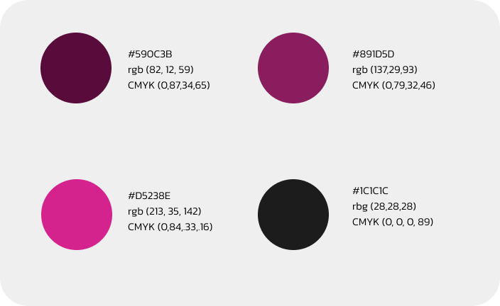

PALETA DE CORES
Para as cores da nossa logomarca, nós, da equipe, pensamos num tom monocromático (variações de tom de uma cor), logo chegamos ao rosa, que passa uma sensação de criatividade, imaginação e conexão, além disso, adicionamos um “coringa”, um tom de preto mais claro, que inclusive é utilizado nesse website.
